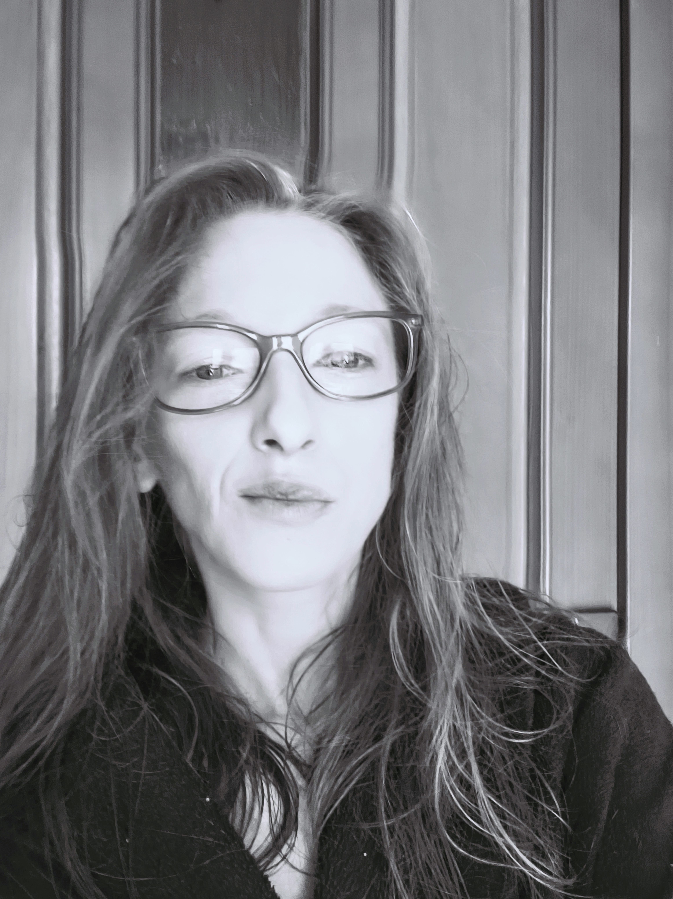

Chceš myš?
metoda · nástroje · fenomény
Tato knížka není knížka. Je to rozcestník, pracovní prostor a návod zároveň. Můžeš ji číst lineárně, nebo skákat. Všechno co potřebuješ je tu — nebo z tu vede odkaz.
Myš si všímá mezer. Toho, co ostatní přehlédli. Toho, co se zadrhlo ve vzduchu. Toho, co páv přepočítával, když se nikdo nedíval. Tato metoda dělá totéž s jazykem.
Devět zvířat. Devět pohádek. Dvanáct úhlů pohledu. A nástroje, které s tím vším pracují — pro psaní, pro týmy, pro diagnostiku, pro hru.
Myš
ta, která si všímá

Myš je malá a vidí věci z jiného úhlu. Vidí to, čeho si ostatní nevšimnou — zadrhnutou větu ve vzduchu, páva který přepočítává svá oka, čápa který zapomněl koho měl donést. A zapisuje to. Ne na papír. Do ticha, do koutů, do skulin mezi slovama.
Myš není postavou. Je to princip. Je to způsob pozorování, který tato metoda nabízí každému kdo ji použije. Ostatní zvířata — kocour, ryba, zajíc, motýl, páv, krokodýl, pavouk, netopýr, lemur — jsou fenomény. Každé zachytilo jeden způsob jak existovat v jazyce. Myš je ta, která je všechny vidí.
Ptát se „Chceš myš?" není otázka na ni samotnou. Je to otázka na všechno. Na smysl, na jazyk, na strach, na to co si z nás kdo udělá.
Zapsáno rukou, která nechtěla nic vysvětlit.
Tyto pohádky nevyprávějí příběhy tak, jak by měly. Místo kouzel tu vládne nedorozumění. Místo dobra a zla – podivný klid mezi nimi. Zvířata tu mluví, ale ne proto, aby nás bavila. Říkají to, co lidé nemohou vyslovit. Příběhy, co se spíš staly, než vymyslely — a možná se pořád dějí. Jen je nelze vidět z běžného úhlu.
—
O MYŠI a o tom, co se stane, když si jí NEvšimneš
—
Kdysi — zároveň ne tak docela dávno. A ne úplně blízko, ale zase ani ne nijak moc daleko. Žila jedna myš. Byla malá, tak jak to u myší normálně bývá. A měla dvě veliké uši, což také není u myši žádná vzácnost.
Nebyla nijak zvlášť rychlá, ale ani úplně pomalá. Nebyla hloupá, ale ani kdovíjak chytrá. Na první pohled obyčejná, běžná myš.
Ale ne normální. Všímala si věcí, které ostatní přehlíželi.
Například toho, že se ve vzduchu občas zadrhne věta. Nebo že páv, když se nikdo nedívá, přepočítává svá oka. Nebo že čáp, někdy jen tak přistane na komíně a zapomene, koho měl donést.
A tahle myš si začala věci zapisovat. Ne na papír. Ale tak nějak. Do ticha. Do koutů. Do skulin mezi slovama, kde to obvykle nikdo nečte.
A pak si jednoho dne všimla, že se kolem ní začínají hromadit zvířata. Ne v řadě. Ne v kruhu. Prostě… tak nějak. A každé si neslo něco, co nevysvětlovalo.
Zajíc měl popálené uši a voněl po kouři. Kocour se dusil smíchem, protože spolkl tečku. Slon si v chobotu nesl třešně, co nikdy nedozrají. A lemur se nedíval na nic, jen na stranu, kde nic nebylo.
Myš neříkala nic. Ale všechno si poznamenala. A pak se jednoho dne zeptala první větu. Ne velkou. Ne důležitou. Jenom tu jednu:
„Chceš myš?"
A to nebyla otázka, co se ptá na ni samotnou. To byla otázka, co se ptá na všechno. Na smysl. Na jazyk. Na strach. Na to, co si z nás kdo udělá.
A taky na to, jestli si tuhle pohádku necháš vyprávět do konce. Nebo zapištíš a utečeš. Nebo si ji složíš jinak.
Protože od té chvíle, už to nebyla jen myš. Byl to klíč. A pádlo. A past.
a konec úvodu. Ale začátek něčeho dalšího. ..možná..
Repo dům
Web bez webu. Žádný hosting, žádný cloud, žádné databáze, žádný backend, žádné jsony. Jen repozitář na GitHubu, kde jsou nástroje propojené odkazy — a přes GitHub Pages to funguje online i offline.
Všechny cesty jsou jednotné. Ilustrace je vždy v doma/ilustrace/zvire.jpg. Data vždy v doma/data/uhly/zvire_uhly.html. Díky tomu funguje vše v každém prostředí bez přenastavení.
Karta jako API. Každé zvíře je samostatná HTML stránka, která v sobě nese pohádku, ilustraci, 12 úhlů, generativní věty, audio odkaz, diagnostiku. Nástroje z karet čtou — karta je zdrojem pravdy.
URL jako stav. Místo databáze pracuji s URL otiskem. Otisk nese informaci o dominantních úhlech, o kartách, o sezení. Dá se sdílet, uložit, vrátit.
Data vlastní kupující. Vše běží lokálně nebo přes GitHub Pages. Žádná data neodcházejí nikam, kde by je někdo jiný kontroloval.
Tato knížka je sama o sobě Repo dům — rozbal zip, otevři index.html v prohlížeči. Funguje bez internetu, bez instalace, bez účtu.
Klíč k úhlům
aneb Jak myš čte pohádky
Klikni na segment → rozbalí se vysvětlení úhlu
Myš nesoudí. Myš neříká, který úhel je lepší. Myš počítá.
Úhly nejsou protikladné, nejsou to osobnostní typy. Fenomény nejsou lidé, ale jevy v jazyce.
Fenomény
klikni na kartu → otevře pohádku
Nástroje
O projektu

Michaela Nováková
chcesmys@gmail.com
web projektu
Tato metoda a všechny nástroje jsou vydány pod licencí Creative Commons BY-NC-SA 4.0.
Smíš je volně používat, sdílet, upravovat, zařadit do vlastních systémů — za podmínky, že uvedeš autorství a zdroj, a nebudeš to komerčně prodávat bez dohody.
Sdílení bez poplatku je záměrné. Šíření je způsob reklamy bez reklamy. Pokud ti metoda přišla užitečná, můžeš koupit karty nebo se ozvat.
Tato metoda vzniká za pohybu. Každá reakce, každý otisk, každý sdílený moment ji formuje. Pokud ti přišlo něco důležité, nepřesné, nebo chceš říct jak jsi to použil — ozvi se.
Napiš na chcesmys@gmail.com nebo sdílej svůj otisk na přehlídce jevů.